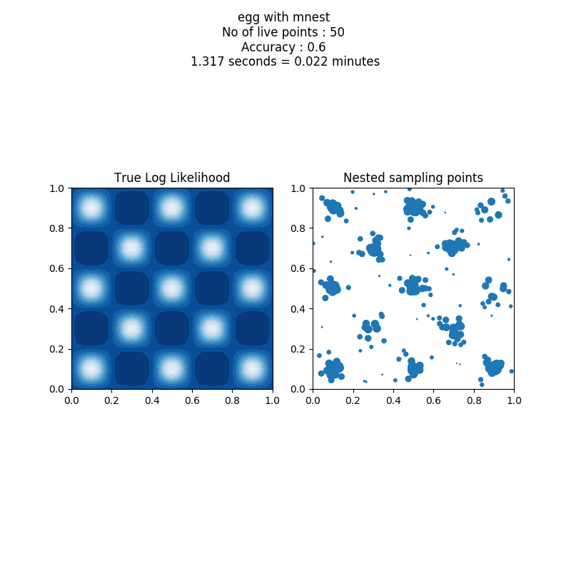
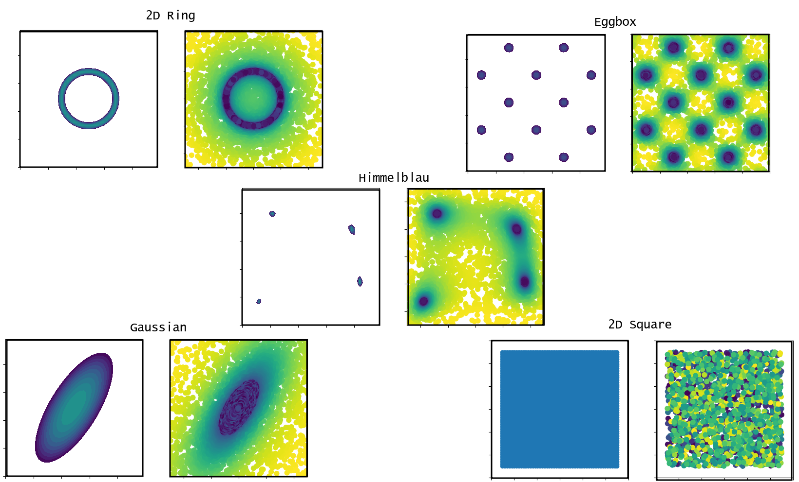

Toy Models¶
examples.toyModels¶
In the directory SuperMC/Run you can run a set of toy models in order to test the nested samplers.
Usage:
python toyModels.py sampler toymodel nlivepoints accuracy
where sampler is one of the nested samplers avaiable in SuperMC and toymodel is one of {egg, ring, square, gauss, shells, square}.
For example, in the SuperMC directory, you can run:
1 | python examples/toyModels.py egg mnest 50 0.5
|
As output you will obtain a text file with the samples, a summary and a plot.

Other toy models:¶
